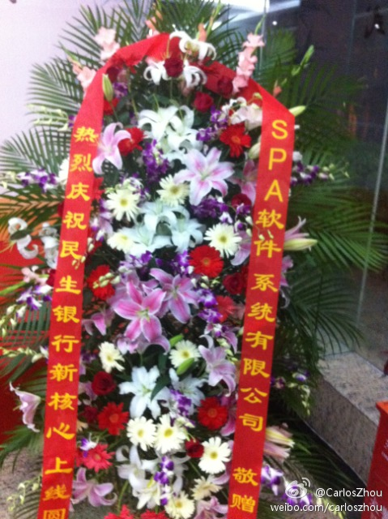
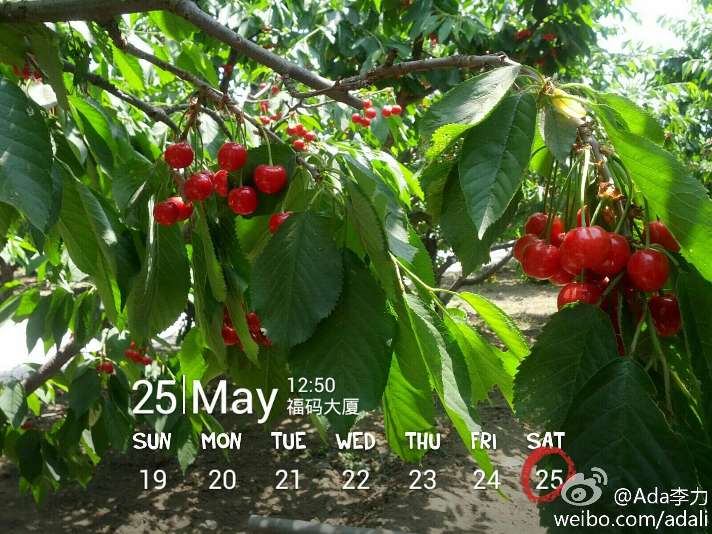

这是一个外国人写的汉语吗？太地道了。@Mike隋:艺人的工作就是闪耀。家人的伺候，公司的包装，演出时台下的策划和准备，台上的做小草来陪衬，影视剧中剧组百来人的心血就为换来艺人在荧幕上短暂的光辉...想对得起大家，好好闪耀就行了。可就怕艺人把工作里自己是"宇宙的中心"这种心态搬到生活里...工作中自我是职业素养，生活里太自我叫"自私"。
50后是中国最悲催的一代人了。//@简直: //@老向-:中国的6、70岁的人，小时太苦，年轻时没接受教育，长大了不停搞运动，后来又下岗，小孩买房把积蓄花光，老来看不起病，心态扭曲的不在少数…… (好吧，来批判我吧。)@新闻晨报:【苏州女学生因低头看资料未及时让座 竟遭一老汉暴打】前不久江苏苏州一辆公交车上，一名大四女学生因低头看复习资料，未给旁边站着的老人让座。老人先用腰撞了2下女生后，双方发生激烈冲突，老人暴打女生。被乘客拉开后，女生准备用手机拍下老人，老人又迅速上前暴打并抢手机…实拍女学生因未及时让座遭老汉殴打 1万次播放 00:00
SAP以后叫SPA公司得了，跟十八摸一样，朗朗上口，容易记。//@SAP卢东明:两种解释：1，这是我司市场部的社交媒体推广的策划；2，一个德国公司就这样被接地气了……@东无华:其实嘛，我们在花店心中是这个名字，半夜含泪默默更改， 
很久没记录女儿的事情，因为基本上她的学习和生活是爸爸负责。晚饭时明俊说他要先躺会儿，我就先给姣姣和我自己盛了饭，姣姣在厨房扒了两口饭，自己拿个碗，踮着脚尖盛了碗粥，端到明俊躺的屋子里去了。- 养女儿的好处。
昨天去摘樱桃，明俊不愿进园，要在外面坐着看pad。我们几个妈妈带着孩子们在园子里边摘边洗边吃。后来还是姣姣说要给爸爸拿些樱桃，双手合着当小篮子，还一再说不够，堆得冒尖了才捧出去。- 养女儿的好处 
昨天除了摘樱桃，还去了上庒蘑菇园采摘。几个孩子中，姣姣采摘最小心翼翼，每次从棚子里出来，她袋子里的东西差不多是最少的，连工作人员阿姨都注意到，特意来鼓励姣姣大胆些，并说她看过很多孩子摘东西之前，都要征询父母的意见。姣姣还真是这样。不知道是为什么。
儿子们也不会忘记爸爸的吧。关键还是看爸爸们陪伴孩子的时间。//@Gator:我有体会，一群妈妈们聊天，男人们往往不爱“掺和”，如果只有一位男士，那就更不愿意参与了。而女儿们是一定不会忘记爸爸的。。。@Ada李力:昨天去摘樱桃，明俊不愿进园，要在外面坐着看pad。我们几个妈妈带着孩子们在园子里边摘边洗边吃。后来还是姣姣说要给爸爸拿些樱桃，双手合着当小篮子，还一再说不够，堆得冒尖了才捧出去。- 养女儿的好处